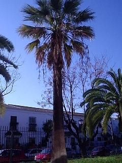

|
Washingtonia
filifera (J.A. Linden) H.
Wendl. in Bot. Zeitung (Berlin)
37: LXI,
68 (1880)
|
|
| Palmera de California, pitchardia de tronco grueso |
Palmera |
| Palmera de
hasta 17 m en el campus. Tronco cilíndrico entre 70 y 80
cm de diámetro, a veces cubierto de restos foliares en su
parte
superior.
Hojas palmeadas, con pecíolo de hasta 125 cm de longitud (1), con espinas; limbo de 1-1'5 m de diámetro, flabeliforme, dividido hasta la mitad en numerosos segmentos largamente bífidos, de color verde-grisáceo. Inflorescencias hasta 5 m (2), en espádice, péndulas. Flores hermafroditas, pequeñas, olorosas, de color crema. Fruto de tipo drupa, de unos 6 mm de diámetros, ovoide, de color pardo.
|
 Foto: Marta
Morilla González, 2006 |
| [Espacio
para
fotos de detalles] |
Observaciones:
El
nombre genérico está dedicado al presidente Georges
Washington.
El epíteto específico alude a los filamentos que se
separan de los
segmentos foliares. |
| Origen: Zonas áridas y desérticas del oeste norteamericano, en cañones y junto a arroyos que no se secan de California, oeste de Arizona y noreste de Méjico (3). | |
| Uso en el campus: cinco ejemplares alineados, alternando con palmeras canarias. | Localización: Parking Sur de la Escuela Técnica Superior de Informática. |
| Referencias:
(1) http://www.aearboricultura.com/washingtonia_filifera.htm |
|
| Marta Morilla González & Carlos Romero Zarco (2006) | |